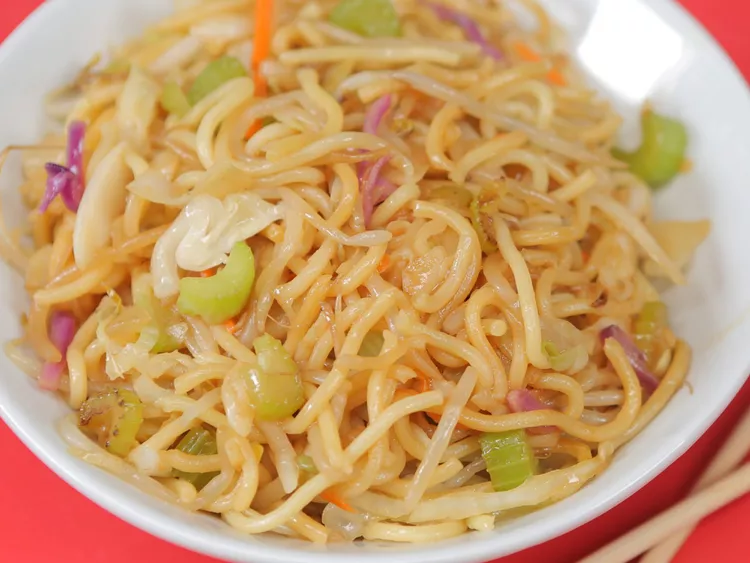

Chow Mein

Description
You can make this Panda Express menu favorite at home. Even better, you can customize this chow mein easily
by adding in any favorite veggies you have on hand. If you want to bulk this easy noodle dish into an entree,
add your protein of choice—leftover chicken, shrimp, or a freshly fried egg would all make great additions.
Ingredients
- 3 tablespoons canola oil
- 1 tablespoon sesame oil
- 1/2 white onion, finely chopped
- 2 stalks celery, sliced
- 1 tablespoon chopped fresh ginger
- 3 cups shredded coleslaw mix
- 5 ounces bean sprouts
- 1 (7.1 ounce) package pre-cooked stir-fry noodles
- 1/4 cup tamari
- 2 tablespoons mirin
Steps
- Heat canola oil and sesame oil in a wok over high heat.
- Add onion, celery, and ginger; cook, stirring often, 1 minute.
- Add coleslaw mix and sprouts; cook, stirring constantly, 2 minutes.
- Add noodles, and cook, stirring constantly, 1 minute.
- Add tamari and mirin; cook, stirring occasionally, 2 minutes.